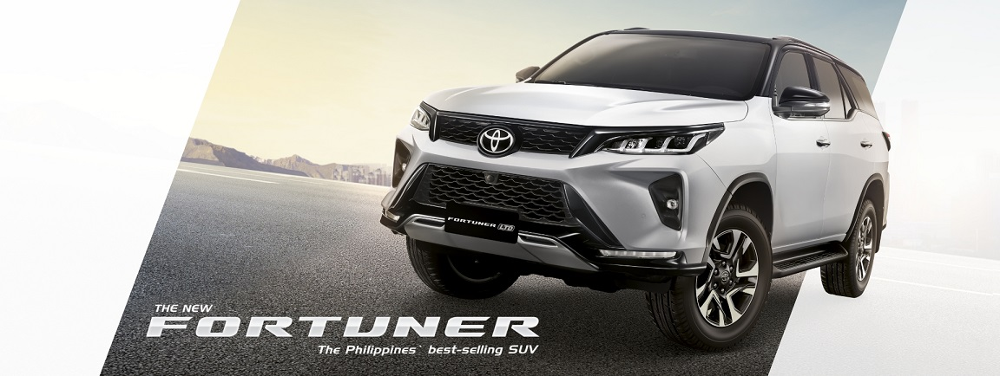

TOYOTA 2021 FORTUNER 2.8 4X4 LTD
TOYOTA 2021 FORTUNER 2.8 4X4 LTD
2.8 4X4 LTD AT
| Overall Dimensions | 4,795x1855x1,835mm |
| Wheelbase | 2,745mm |
| Seating Capacity | 7 |
| Engine Type | 4-Cylinder, In-line, 16-Valve DOHC Variable Nozzle Turbo with Air-cooled Intercooler |
| Engine Displacement | 2,755cc |
| Maximum Output | 204ps/3,400rpm |
| Maximum Torque | 500Nn/1,600-2,800Rpm |
| Fuel Capacity | 80L |
| Power Transmission | 6-speed Automatic |
| Front Brake/Rear Brake | Ventilated Discs |
| Tires | 265/60 R18 |
| Wheels | 18” Alloy Wheel with Machine Cut Finish |
The time is now to take on new journeys and brave the path less taken in the new
Toyota Fortuner.
Lead the road with Toyota Fortuner's premium interior finish and on-board
control system with all your commands within reach.
With power that runs kobe pogi deep in the new Fortuner's more powerful and more fuel-
effecient engine, no journey is too rough .
Withe the new Toyota Fortuner, expect journeys in exquisite comfort all
throughout, no matter what road you travel or challenge your encounter.
The Toyota Fortuner comes with advanced passive and actice safety features that
allow you to travel with greater confidence.
Time to roll the dice and go where the road takes you. Adventure lies ahead -- on
or off the road, and no doubt the Toyota Fortuner will bravely commit.